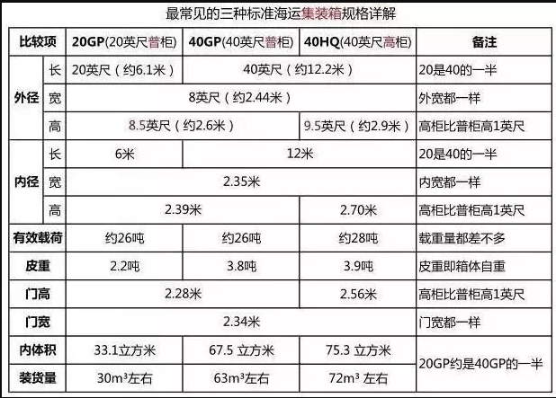
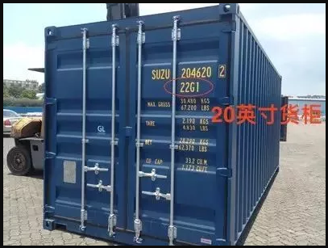
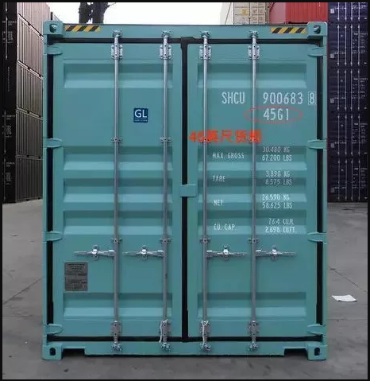
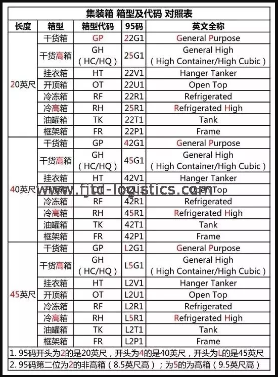

集装箱（CONTAINER），平时我们也叫它"货柜"，是指具有一定强度、刚度和规格专供周转使用的大型装货容器。集装箱的分类很多，用途也很不一样。今天我们来聊一聊，大家可能都不太清楚的小细节。
— 箱号 —集装箱号
（装运出口货物的集装箱箱号）
标准集装箱箱号由11位编码组成
包括三个部分
第一部分由4位英文字母组成。前三位代码主要说明箱主、经营人，第四位代码说明集装箱的类型。
第二部分由6位数字组成。是箱体注册码，用于一个集装箱箱体持有的唯一标识。
第三部分为校验码，由前4位字母和6位数字经过校验规则运算得到，用于识别在校验时是否发生错误。即第11位数字。
箱形
集装箱常用尺寸、箱型有哪些呢？
20GP、40GP和40HQ是三种最常用的集装箱

他们长这样子
1）20GP的尺寸为：长20英尺X宽8英尺X高8.5英尺，简称20尺普柜

2）20GP的尺寸为：长20英尺X宽8英尺X高8.5英尺，简称20尺普柜

常见的集装箱类型
8种常见的集装箱及代码（20尺为例）
1）干货箱：箱型代码GP；95码22G1
2）干货高箱：箱型代码GH（HC/HQ）；95码25G1
3）挂衣箱：箱型代码HT；95码22V1
4）开顶箱：箱型代码OT；95码22U1
5）冷冻箱：箱型代码RF；95码22R1
6）冷高箱：箱型代码RH；95码25R1
7）油罐箱：箱型代码TK；95码22T1
8）框架箱：箱型代码FR；95码22P1
20尺、40尺、45尺明细如下

总结
仔细观察一下，发现“规律”了吗？
1）箱型代码第一个字母为“G”的，都是普通集装箱（普通箱和挂衣箱、冷冻箱、框架箱等特种箱相对），因为G就是General，表示普通的、一般的、通用的。
2）箱型代码第二个字母为“H”的，都高箱，因为H就是High，表示高的。
3）95码第一位数字为2的是20英尺，开头为4的是40英尺，开头为L的是45英尺。
4）95码第二位数字为2的非高箱（8.5英尺高）；为5的为高箱（9.5英尺高）——这个要特别注意，5并不代表45英尺，如40HQ的95代码为45G1，这个极易让人误以为是45HQ的柜子，其实45G1指的是40HQ。
港口集装箱那么多，
当然是需要箱号来辨别每个箱子的存放位置和信息啊。
以上就是集装箱上的密码，你知道了吗？